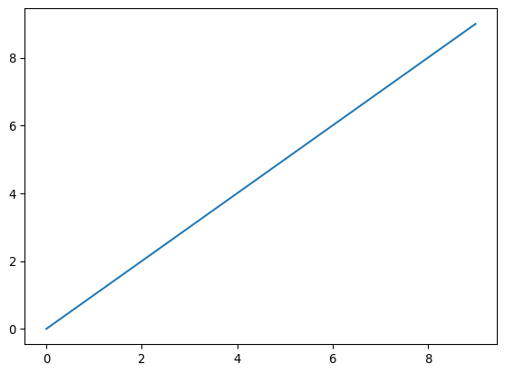
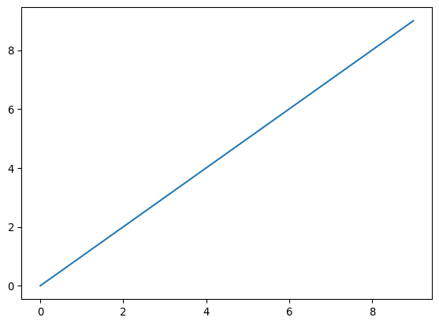

![]()
Hide/Show the code
import matplotlib.pyplot as plt
import numpy as np
fig, ax = plt.subplots()
ax.plot(np.arange(10))
 ISSN 2824-7795
ISSN 2824-7795
to be submitted to the journal Computo.
We introduce a Bayesian model of categorical data rating and classification. Rater effects capture raters’ accuracy and bias and item-level effects capture the bias introduced by the items being classified such as difficulty. We show that item-level effects are crucial for ensuring calibrated predictions. We use multivariate priors to capture mean task accuracy, bias, and correlation among responses, which allows sharper and better calibrated predictions for new data raters as might be found in an ongoing data rating task with crowdsourcing. Item-level predictors (aka features) can be used to jointly train a classifier, where no predictors results in a prevalence-only model. We show that training a classifier with a probabilistic data set regularizes estimates and improves the calibration of probabilistic classification.
Supervised training of classifiers is based on labeled data sets. Labeled data typically arises from humans or systems rating the data (also known as “coding” or “annotating” in different literatures). Because human and machine raters are never 100% accurate, the problem arises as to how to deal with disagreements in ratings. For example, given a radiology image, one human rater might say it shows a stage 1 cancer tumor and another may say it is nothing or given a social media post, one rater might say it is positive toward a product and another might say it is neutral. How do we adjudicate these disagreements among raters and get on with building classifiers? One traditional approach is to vote—use multiple raters and take a majority vote. Often this is done in stages, where if two raters disagree, a third is brought in to settle the dispute. This can be problematic when both raters make the same error or when there is disparity in accuracy or correlated bias among the raters. And in the end, we have no measure of certainty. Another traditional approach is to censor data where there is disagreement—that is, use only items in the training data for which the raters agreed. This approach may lead to clean data, but it will not be representative of the “wild type” data from which it was selected.
In order to make the best use of our data, we need to appropriately model it to correct for the bias and accuracy of the raters as well as the difficulty and biases introduced by the items being annotated. In the end, we will be left with a “soft” data set, with probabilities assigned to outcomes for each item. A traditional data set uses a one-hot encoding (where one category has probabity 1 and the others probability 0) and is often derived by assigning the most probable category. We will show in this paper that taking the best category is inferior to selecting a category at random based on the probability distribution, which in turn is inferior to training directly with the probabilistic weights.
Among the contributions of this paper are a new crowdsourcing and classifier training model that introduces (1) item-level effects for difficulty and item bias, (2) multivariate priors on item-level and rater-level effects, and (3) joint classifier and data set training with full Bayesian inference. The model strictly generalizes the model of (dawid-skene?). We show how the item-level effects are necessary to achieve calibrated prediction on new data, and how training a model jointly with full Bayesian inference is preferable to factoring the problem.
We assume there are K \in \mathbb{N} categories into which items are classified, I \in \mathbb{N} items being rated, and J \in \mathbb{N} raters. We assume there are N \in \mathbb{N} ratings, with y_n \in 1{:}K being the rating given by rater jj[n] for item ii[n]. The result is a long-form table of N rows; the first few rows of an example are shown in Table 1.
n |
ii |
jj |
y |
|---|---|---|---|
| 1 | 1 | 1 | 4 |
| 2 | 1 | 2 | 4 |
| 3 | 1 | 6 | 3 |
| 4 | 2 | 3 | 1 |
| 5 | 2 | 4 | 1 |
| 6 | 3 | 2 | 6 |
| \vdots | \vdots | \vdots | \vdots |
This data format is flexible enough to allow each item to be rated by a zero or more raters. While it is possible to represent a single rater rating the same item multiple times, our models will treat the ratings as independent.
In addition to the ratings, we will assume there are L predictors (features, etc.) for each item. We let x \in \mathbb{R}^{I \times L} be the data matrix, with rows x_i \in \mathbb{R}^L being the L-vector of predictors for item i \in 1{:}I. We model intercepts separately and thus do not assume that there is a column of 1s in the matrix x. Although it would be possible to have rater-level predictors, such as the geographical location or age or sex of the rater, we do not consider that extension in this paper.
We formulate our statistical model generatively in the sense that it is able to generate a complete data set given the items and predictors. We will start with the model for the items then consider a model for the ratings.
We will assume that each item i \in 1{:}I has a true category z_i \in 1{:}K. The z[i] are not observed and may be considered missing data and represented by means of a discrete parameter in the model. We model the category based on item-level predictors using a logistic regression, where we assume \beta \in \mathbb{R}^{L \times K} is our matrix of regression coefficients and \alpha \in \mathbb{R}^K is an intercept. z_i \sim \textrm{categorical}\!\left(\textrm{softmax}(\alpha + x_i \cdot \beta)\right), where \textrm{softmax}(u) = \exp(u) / \textrm{sum}(\exp(u)) \in \Delta^{K-1}, with \exp() applied elementwise. We will be able to use the fitted model to make predictions for new items not in the training set assuming we have their predictor vectors. That is, the result will be a classifier for new items.
In the case where we have no item-level predictors so that L = 0, our model will reduce to an intercept-only model where \textrm{softmax}(\alpha) \in \Delta^{K - 1} represents the simple prevalence of the categorical outcomes.
In order to allow raters to vary in their accuracies and biases, we will model each rater to have their own probabilistic response to items of a given true category. Specifically, we assume that each rater j \in 1{:}J has a response simplex \theta_{j, k} \in \Delta^{K-1} which says how they respond to items of category k, all else being equal. A perfect rater has \theta_{j, k, k'} equal to 1 if k = k' and 0 otherwise. That is, \theta_{j, k, k} represents rater j’s accuracy on items of category k and the off-diagonal elements of \theta_j represent the biases.
We will further assume that each item i \in 1{:}I has a vector of effects \varphi_i \in \mathbb{R}^K. If \varphi_i = 0, the item has no effect on ratings and raters will just return results according to \theta_{j, k} for items of category k. If \varphi_{i, z[i]} is high, the item is relatively easy to rate, whereas if it’s low, the item is difficult to rate, with the other terms determining the response bias.
Given the rating and item-level effects, the generative model for ratings is y_n \sim \mathrm{categorical}\!\left(\textrm{softmax}(\varphi_{z_{ii[n]}} + \theta_{jj[n], \, z_{ii[n]}})\right). Breaking this down, item ii[n] \in 1{:}I is being given a rating of y_n \in 1{:}K by rater jj[n] \in 1{:}J. z_{ii[n]} is the true category of the item ii[n] being rated, so \varphi_{z_{ii[n]}} \in \mathbb{R}^K is the vector of effects for that item. The second term \theta_{jj[n], z_{ii[n]}} \in \mathbb{R}^K is the response of the rater jj[n] to items of true category z_{ii[n]}. In other words, the rating is a logistic regression with item-level and rater-level effects that depend on the true category of the item.
For the prevalence regression coefficients \beta \in \mathbb{R}^L, we will use a weakly informative prior to define the scale of expected answers, \beta_l \sim \textrm{normal}(0, 3).
The item-level effects \varphi_i \in \mathbb{R}^K are assigned multivariate normal priors based on their true categories z[i] \in 1{:}K, \varphi_i \sim \textrm{normal}(\mu^\varphi_{zz[i]}, \Sigma^\varphi_{zz[i]}), where \mu^\varphi_k \in \mathbb{R}^K is a location parameter and \Sigma^{\varphi}_k is a positive definite covariance matrix parameteter for k \in 1{:}K.
The rater-level effects \theta_{j, k} \in \mathbb{R}^K are assigned to a prior conditioned on the true category k, \theta_{j, k} \sim \textrm{normal}(\mu^\theta_k, \Sigma^\theta_k), where \mu^\theta_k \in \mathbb{R}^K is the location parameter and \Sigma^\theta_k is a positive definite covariance matrix for k \in 1{:}K.
We have two sequences of location parameters, \mu^\theta_k and \mu^\phi_k, for k \in 1{:}K. We assign the components of the location parameters independent and weakly informative priors to determine their scales, \mu^\theta_{k, k'}, \mu^\varphi_{k, k'} \sim \textrm{normal}(0, 3), for k, k' \in 1{:}K.
We also have two sequences of symmetric, positive-definite covariance parameters, \Sigma^\theta_k and \Sigma^\varphi_k, for k \in 1{:}K. We factor covariance matrices \Sigma into a vector \sigma of scales and correlation matrix \Omega so that \Sigma^\theta_k = \textrm{diag}(\sigma^\theta_k) \cdot \Omega^\theta_k \cdot \textrm{diag}(\sigma^\theta_k) and \Sigma^\varphi_k = \textrm{diag}(\sigma^\varphi_k) \cdot \Omega^\varphi_k \cdot \textrm{diag}(\sigma^\varphi_k), with \sigma^\theta_k, \sigma^\varphi_k \in \mathbb{R}^K and \Omega^\theta_k, \Omega^\varphi_k are correlation matrices (i.e., symmetric positive definite with unit diagonal). We consider the scales and correlation matrices as parameters and treat the covariance matrices as derived quantities defined as above.
The components of the scale parameters are assigned weakly informative priors independently by component, taking \sigma^\theta_{k, k'}, \sigma^\varphi_{k, k'} \sim \textrm{normal}_+(0, 3), for k, k' \in 1{:}K. We assign Lewandowski-Kurowicka-Joe (LKJ) priors to the correlation matrix,
\Omega^\theta_k, \Omega^\varphi_k \sim \textrm{LKJ}(5), for k \in 1{:}K, where the LKJ density is defined for a symmetric positive-definite, unit-diagonal correlation matrix \Omega and shape \eta > 0 by \textrm{LKJ}(\Omega \mid \eta) \propto \textrm{det}(\Omega)^{\eta - 1}. For \eta = 1, this distribution is uniform over correlation matrices \Omega. For \eta > 1, it concentrates mass around the unit correlation matrix. Thus when used as a prior on a correlation matrix parameter, it has the effect of shrinking the correlation estimates (i.e., the off-diagonal elements of an estimated \Omega).
First make sure that you are able to build your manuscript as a regular notebook on your system. Then you can start configure the binder environment.
This section covers basic formatting guidelines. Quarto is a versatile formatting system for authoring HTML based on markdown, integrating LaTeX and various code block interpreted either via Jupyter or Knitr (and thus deal with Python, R and many other langages). It relies on the Pandoc Markdown markup language.
To render/compile a document, run quarto render. A document will be generated that includes both content as well as the output of any embedded code chunks within the document:
quarto render content.qmd # will render to htmlBold text or italic
But we can also do a numbered list
LaTeX code is natively supported1, which makes it possible to use mathematical formulae:
will render
f(x_1, \dots, x_n; \mu, \sigma^2) = \frac{1}{\sigma \sqrt{2\pi}} \exp{\left(- \frac{1}{2\sigma^2}\sum_{i=1}^n(x_i - \mu)^2\right)}
It is also posible to cross-reference an equation, see Equation 1:
\begin{aligned} D_{x_N} & = \frac12 \left[\begin{array}{cc} x_L^\top & x_N^\top \end{array}\right] \, \left[\begin{array}{cc} L_L & B \\ B^\top & L_N \end{array}\right] \, \left[\begin{array}{c} x_L \\ x_N \end{array}\right] \\ & = \frac12 (x_L^\top L_L x_L + 2 x_N^\top B^\top x_L + x_N^\top L_N x_N), \end{aligned} \tag{1}
Quarto includes a nice support for theorems, with predefined prefix labels for theorems, lemmas, proposition, etc. see this page. Here is a simple example:
Theorem 1 (Strong law of large numbers) The sample average converges almost surely to the expected value:
\overline{X}_n\ \xrightarrow{\text{a.s.}}\ \mu \qquad\textrm{when}\ n \to \infty.
See Theorem 1.
Quarto uses either Jupyter or knitr to render code chunks. This can be triggered in the yaml header, e.g., for Jupyter (should be installed on your computer) use
---
title: "My Document"
author "Jane Doe"
jupyter: python3
---For knitr (R + knitr must be installed on your computer)
---
title: "My Document"
author "Jane Doe"
---You can use Jupyter for Python code and more. And R + KnitR for if you want to mix R with Python (via the package reticulate Ushey, Allaire, and Tang (2020)).
R code (R Core Team 2020) chunks may be embedded as follows:
{r r-code, echo=TRUE} x <- rnorm(10)
---
title: "My Document"
author "Jane Doe"
jupyter: python3
---import matplotlib.pyplot as plt
import numpy as np
fig, ax = plt.subplots()
ax.plot(np.arange(10))
Plots can be generated as follows:
{r pressure, message = FALSE} library("ggplot2") p <- ggplot(mpg, aes(displ, hwy)) + geom_point() + geom_smooth() p
It is also possible to create figures from static images:

Tables (with label: @tbl-mylabel renders Table 2) can be generated with markdown as follows
| Tables | Are | Cool |
|---|---|---|
| col 1 is | left-aligned | $1600 |
| col 2 is | centered | $12 |
| col 3 is | right-aligned | $1 |
Table can also be generated by some code, for instance with knitr here:
{r cars} knitr::kable(summary(cars), caption = "Table caption.")
References are displayed as footnotes using BibTeX, e.g. [@computo] will be displayed as (Computo Team 2021), where computo is the bibtex key for this specific entry. The bibliographic information is automatically retrieved from the .bib file specified in the header of this document (here: references.bib).
As already (partially) seen, Quarto includes a mecanism similar to the bibliographic references for sections, equations, theorems, figures, lists, etc. Have a look at this page.
Check our mock version of the t-SNE paper for a full and advanced example using the Jupyter kernel.
The template available in the Computo Quarto extension uses advanced features and the KnitR kernel (interactive plots and pseudocode).
{r session-info} sessionInfo()
@article{carpenter2023,
author = {Bob Carpenter},
title = {A {Bayesian} Hierarchical Model of Categorical Data Rating
and Classification\textless br/\textgreater{}},
journal = {Computo},
date = {2023-01-05},
url = {https://computo.sfds.asso.fr/???},
doi = {xxxx},
langid = {en},
abstract = {We introduce a Bayesian model of categorical data rating
and classification. Rater effects capture raters’ accuracy and bias
and item-level effects capture the bias introduced by the items
being classified such as difficulty. We show that item-level effects
are crucial for ensuring calibrated predictions. We use multivariate
priors to capture mean task accuracy, bias, and correlation among
responses, which allows sharper and better calibrated predictions
for new data raters as might be found in an ongoing data rating task
with crowdsourcing. Item-level predictors (aka features) can be used
to jointly train a classifier, where no predictors results in a
prevalence-only model. We show that training a classifier with a
probabilistic data set regularizes estimates and improves the
calibration of probabilistic classification.}
}